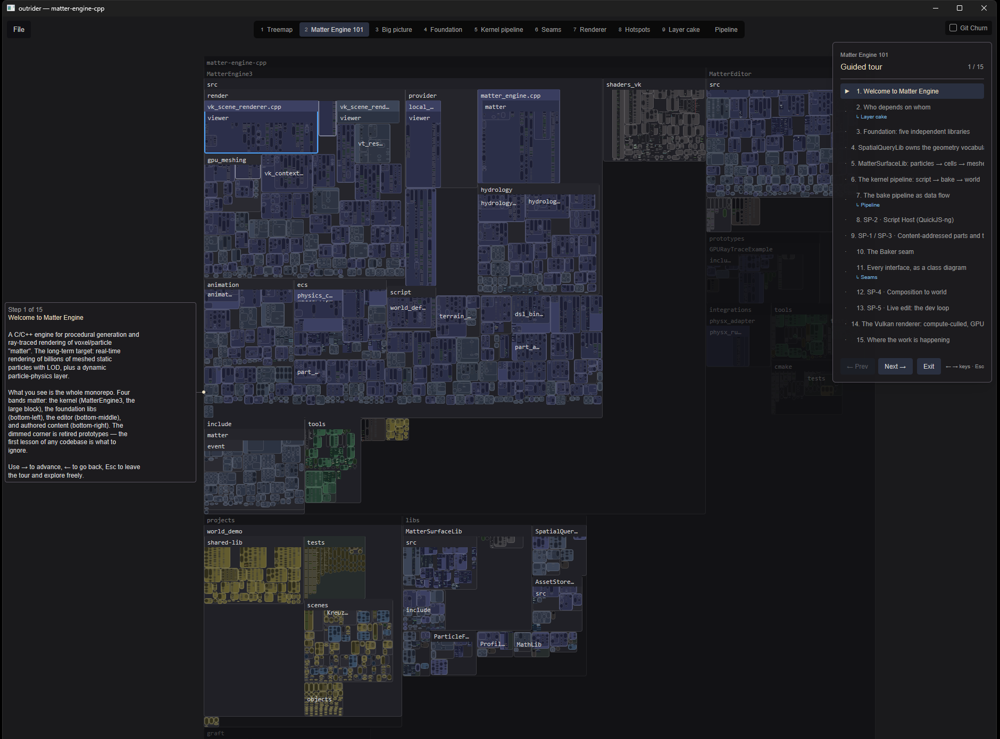
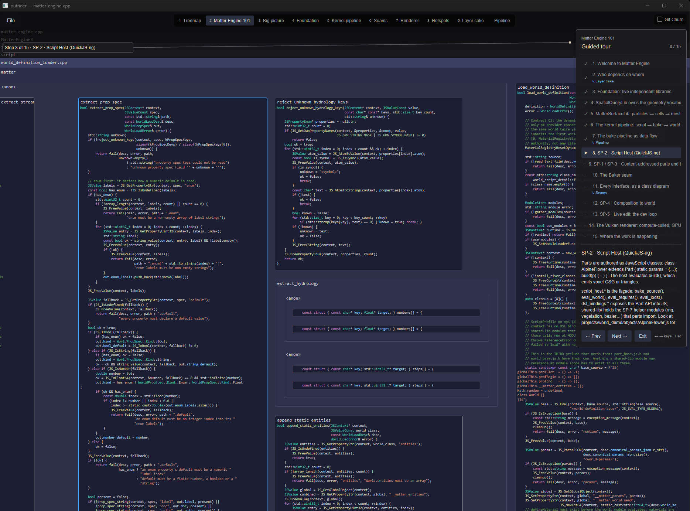
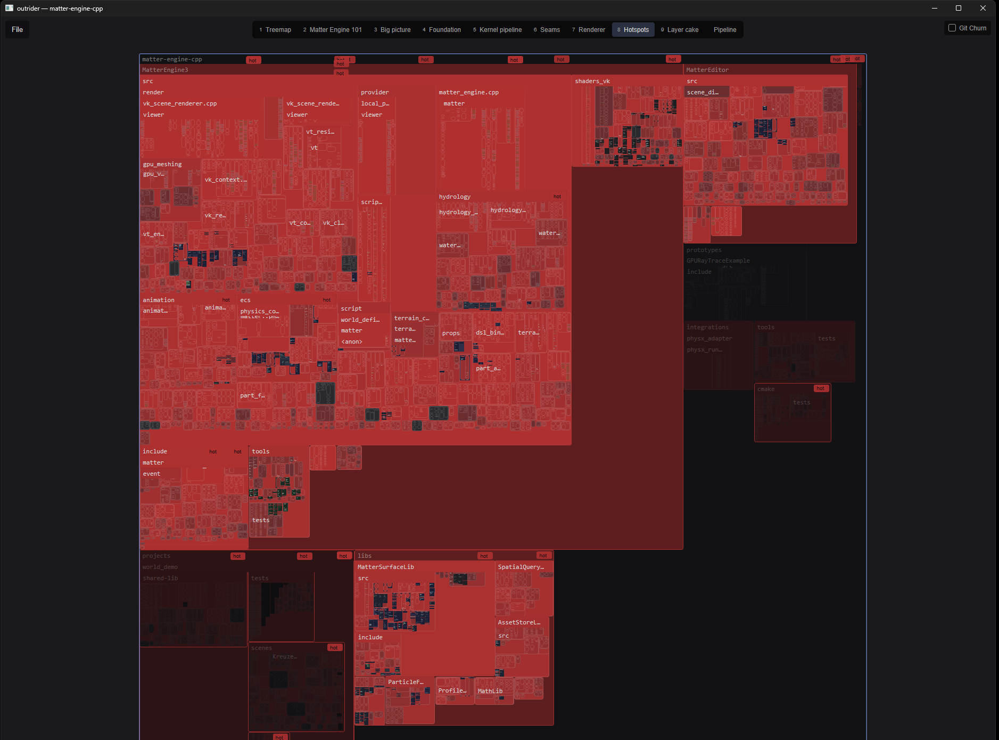
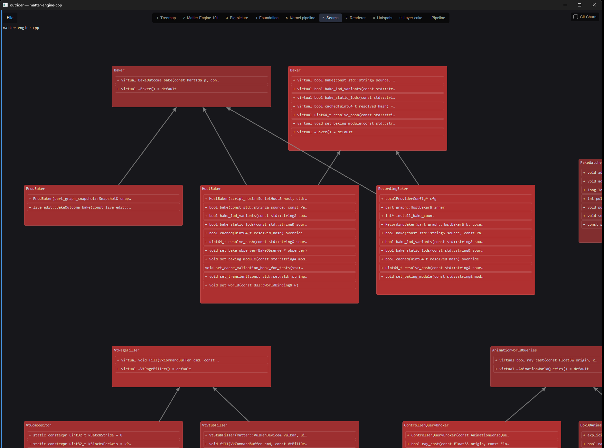

See the code.Not a summary of it.
Outrider renders an entire codebase as an interactive treemap where every file and every symbol is a real, readable box of source. Zoom out to forty thousand files. Zoom in and read the comment on a field declaration. It is the same view the whole way down.

The author is narrating its own homework
Codebases are increasingly written and rewritten by agents, fast. The practical way people understand such a codebase today is to ask the agent — which means the only quick window onto the code is an account given by the same model that wrote it. That is precisely where confident-wrong hides.
Outrider is an instrument rendered from ground truth: the AST, the call graph, the diff, and git history. The split between what measures and what narrates is enforced mechanically, not promised.
Large, tangled, central, churning — computed from the repo and inspectable down to the number. Structure owns every colour and every bit of geometry.
Narration is genuinely useful and always marked as the model's account. It never drives an assessment, a colour, a heat value, or a border.
Zoom is the interface
There is no overview mode sitting apart from the code. One continuous zoom walks a level-of-detail ladder, and each rung is chosen per box, per frame, from how many pixels that box actually has. A box is never empty and never a meaningless rectangle.
Too small for a single bar row. Colour only.
One bar per source line, indented to its real length. Drawn straight from the index — no bake, so it is never late.
Real rasterised glyphs, cached to disk per symbol.
Shaped at the actual font size, so it stays crisp however far you go.

Structure you can see
Git churn paints the map directly. The parts of a repository under active change are obvious before you have read a line of it — and the number behind every shade is there if you want it.

Heat is the one place the palette shouts, because churn is the one signal that should interrupt you.
Agents drive the view
A view is a plain JSON file in .outrider/views/: named sets, colour layers,
marks, and a camera path with narration anchored to the symbols it describes. Drop one in
the folder and the watcher opens it as a tab.
That turns explain this codebase into a walk through the real code instead of a wall of prose. The same symbols can be laid out by relationship rather than containment — inheritance, call graphs, dependency layer cakes, data-flow pipelines — and your focused symbol follows you between representations.
The outrider-cli binary exposes the same surface for scripting: resolve symbol
ids, drive a tour, and read back the comments a human left while walking it.
// .outrider/views/06-hotspots.json
{
"sets": {
"hot": { "where": { "metric": "churn",
"op": ">=", "value": "p90" } }
},
"layers": [
{ "fill": { "metric": "churn",
"scale": "percentile" } },
{ "marks": { "on": "hot", "kind": "hotspot",
"basis": "churn" } }
]
}
What's in it
treemap
The whole codebase at once, down to individual functions, structs and classes.
semantic LOD
Line bars, miniature text, then live shaped glyphs — picked per box, per frame.
git churn
Heat and hotspot marks computed from real commit history.
graph space
Inheritance, call graphs, dependency layer cakes and pipeline diagrams.
view specs
Declarative JSON views, hot-reloaded from disk as you edit them.
guided tours
Scripted camera paths with narration anchored in the view.
fuzzy search
Files with Ctrl+P, symbols with Ctrl+T, then fly the camera there.
comments
Press c on any symbol; an agent reads the queue back over the CLI.
languages
Rust, C, C++, C#, Python, JavaScript, TypeScript, TSX, GLSL, HLSL.
Install
# build from source — Rust 1.89+
git clone https://github.com/ElectricJack/outrider-ide
cd outrider-ide
cargo build --release
# open a project
./target/release/outrider /path/to/projectPrebuilt binaries for Linux, macOS and Windows are on the releases page.
Outrider never writes cache files into the repositories it analyses — textures and churn caches live under your OS cache directory, and the disk budget is configurable per project.
Prior art
Treemaps of source code have a long lineage, and Outrider is a recent entry in it rather than a new idea: SeeSoft (Bell Labs, 1992), the Linux kernel treemap (2002), Microsoft's Code Thumbnails (2006), Yoann Padioleau's codemap — which had semantic sizing and colouring years earlier — and Rik Arends' Makepad Studio code atlas. All worth your time if this page interested you.